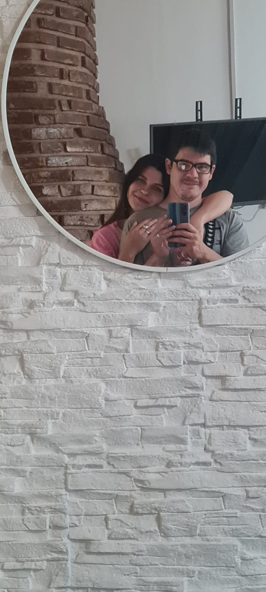
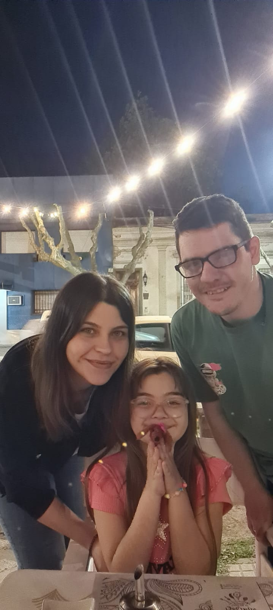
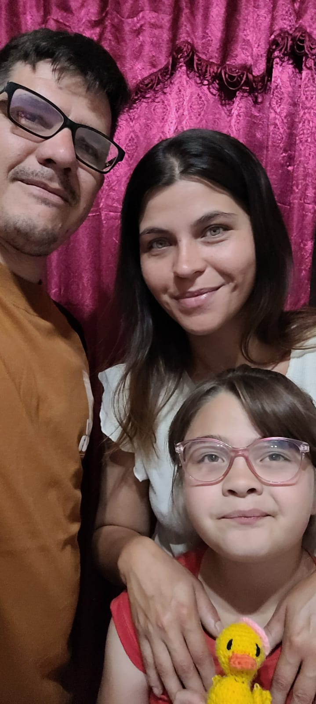
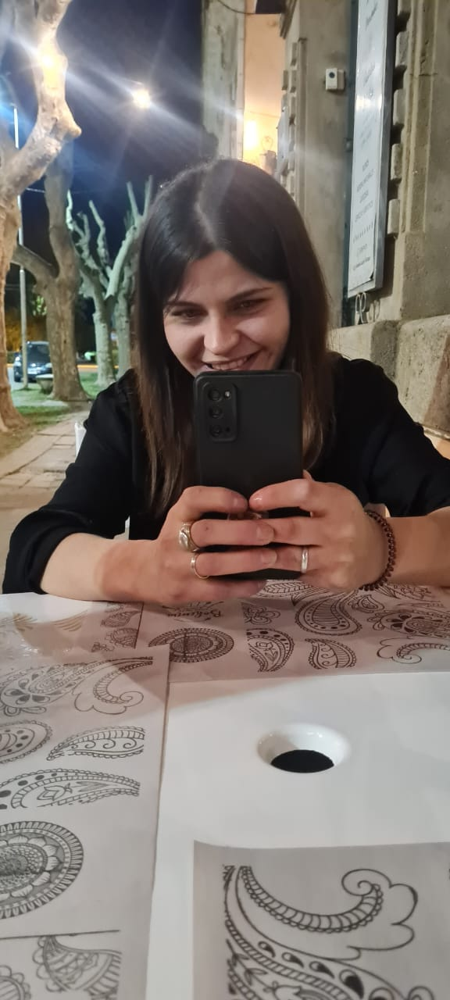
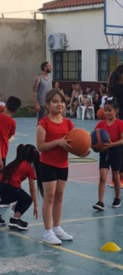
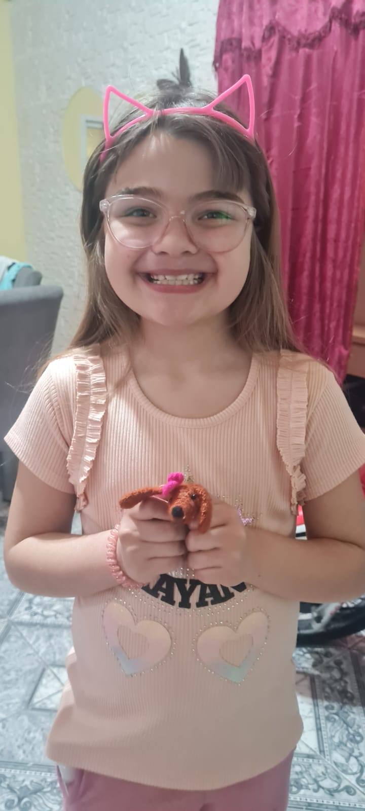

Un poco de mi vida:
En esta pagina trata de mostrar de la mejor manera parte de mi vida para poder compartirla con quien mas quiero, ¡¡¡espero que les guste!!!






Primero un poquito de musiquita linda:
The Beatles - Don't let me down, en vivo, 30 de enero de 1969, en la terraza de Apple studios
No me decepciones Don't let me down No me decepciones Don't let me down No me decepciones Don't let me down No me decepciones Don't let me down Nunca nadie me amó como ella Nobody ever loved me like she does Oh, ella lo hace. Ooh, she does si, ella lo hace Yes, she does Y si alguien quisiera como ella me ama And if somebody loved like she do me Ooh, ella me hace Ooh, she do me si, ella lo hace Yes, she does No me decepciones Don't let me down No me decepciones Don't let me down No me decepciones Don't let me down No me decepciones Don't let me down estoy enamorado por primera vez I'm in love for the first time ¿No sabes que va a durar? Don't you know it's gonna last? Es un amor que dura para siempre. It's a love that lasts forever Es un amor que no tiene pasado. It's a love that has no past No me decepciones Don't let me down No me decepciones (ooh) Don't let me down (ooh) No me decepciones Don't let me down No me decepciones Don't let me down Y desde la primera vez que ella realmente me hizo And from the first time that she really done me Ooh, ella me hizo Ooh, she done me Ella me hizo bien She, done me good Supongo que nadie realmente me hizo nada I guess nobody ever really done me Ooh, ella me hizo Ooh, she done me Ella me hizo bien She, done me good No me decepciones, oye Don't let me down, hey No me decepciones (ji-ji) Don't let me down (hee-hee) No me decepciones Don't let me down Por favor (¡ay!) Please (ow!) (¡Ay!) No me decepciones (Ow!) Don't let me down (¡Ay!) No me decepciones (Ow!) Don't let me down (¿Puedes entenderlo?) No me decepciones (Can you dig it?) Don't let me down
Datos y curiosidades sobre mi:
Edad
31 años
Cuadro de futbol
Boca Juniors, EL MAS GRANDE DE LA HISTORIAPasatiempos
Jugar con la pc, salir a caminar, estudiar, ver series, peliculas y videos de YouTubeComida favorita
¡Pizza!¿El dia o la noche?
El dia, ya estoy viejo para andar despierto hasta tarde xD¿Team invierno o team verano?
Team invierno, me gusta mas el frio que el calor¡Me gusta mucho aprender!
Durante mi tiempo libre o en cualquier momento, me gusta aprender habilidades nuevas, esta tabla muestra algunas de las habilidades que pude desarrollar a lo largo del tiempo, espero en el futuro poder aprender muchas mas!!!
| Fecha | Logro | Descripcion | Icono |
|---|---|---|---|
| 1999 - ... | Ingles | ingles avanzado, aprendi en institutos, juegos, musica, etc. | |
| 2023 | Electricista | Electricidad domiciliaria e industrial | |
| 2024 - ... | Programación | Actualmente estoy aprendiendo desarrollo web y otros lenguajes como python |
Tambien tengo una hermosa familia:
Ella es Ludmila, mi esposa:
Ella es Angeles, mi hija:

Aca tenes un poquito mas de musica:
The Beatles - Get Back, en vivo, 30 de enero de 1969, en la terraza de Apple studios
Jojo era un hombre que pensaba que era un solitario. Jojo was a man who thought he was a loner Pero él sabía que no podía durar But he knew it couldn't last Jojo salió de su casa en Tucson, Arizona. Jojo left his home in Tucson, Arizona Por un poco de pasto de California For some California grass Vuelve, vuelve Get back, get back Vuelve a donde alguna vez perteneciste Get back to where you once belonged Vuelve, vuelve Get back, get back Vuelve a donde alguna vez perteneciste Get back to where you once belonged Vuelve jojo Get back Jojo Ir a casa Go home Vuelve, vuelve Get back, get back De vuelta a donde una vez perteneciste Back to where you once belonged Vuelve, vuelve Get back, get back De vuelta a donde alguna vez perteneciste, sí Back to where you once belonged, yeah Oh, vuelve, Jo. Oh, get back, Jo La dulce Loretta Martin pensó que era una mujer. Sweet Loretta Martin thought she was a woman Pero ella era otro hombre. But she was another man Todas las chicas a su alrededor dicen que se lo espera. All the girls around her say she's got it coming Pero ella lo consigue mientras puede. But she gets it while she can Oh, regresa, regresa Oh, get back, get back Vuelve a donde alguna vez perteneciste Get back to where you once belonged Vuelve, vuelve Get back, get back Vuelve a donde alguna vez perteneciste Get back to where you once belonged Vuelve Loretta, woo, woo Get back Loretta, woo, woo Ir a casa Go home Oh, regresa, sí, regresa Oh, get back, yeah, get back Vuelve a donde alguna vez perteneciste Get back to where you once belonged Sí, regresa, regresa Yeah, get back, get back Vuelve a donde alguna vez perteneciste Get back to where you once belonged Oh Ooh Ooh, ooh Ooh, ooh Vuelve, Loreta. Get back, Loretta Tu mami te está esperando Your mommy's waitin' for you Usando sus zapatos de tacón alto Wearin' her high-heel shoes Y un suéter de cuello bajo And a low-neck sweater Vuelve a casa, Loretta. Get back home, Loretta Vuelve, vuelve Get back, get back Vuelve a donde alguna vez perteneciste Get back to where you once belonged Oh, regresa, regresa Oh, get back, get back Vuelve, oh sí Get back, oh yeah